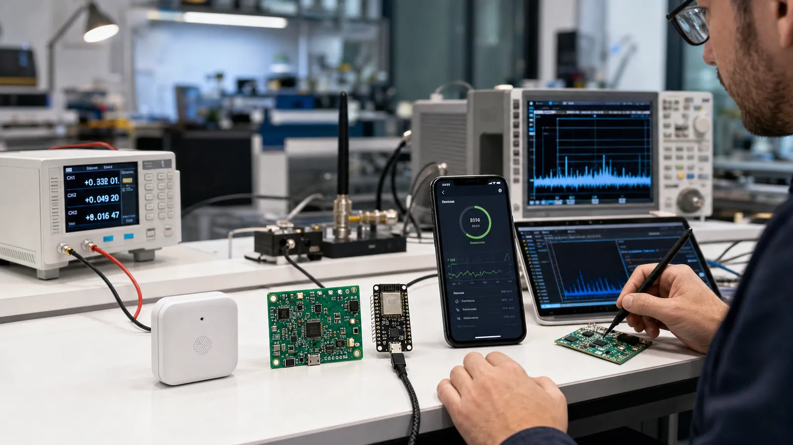

تسلط یعنی بتوانید رفتار سیستم را پیشبینی، اندازهگیری و در زمان خطا توضیح دهید. پروژه نهایی باید از یک نیاز واقعی شروع شود و سختافزار، Firmware، پروتکل، اپلیکیشن، امنیت، انرژی و تولید را به یک قرارداد منسجم تبدیل کند.
یک Advertising Packet را دستی و با ابزار تحلیل کنید؛ GATT یک دستگاه ناشناخته را بخوانید؛ Service اختصاصی با قرارداد نسخهدار طراحی کنید؛ Pairing و Permission را از مدل تهدید انتخاب کنید؛ و با Capture علت خطای ارتباط را پیدا کنید.
یک سنسور باتریخور بسازید که داده محیطی را نمایش میدهد، از طریق BLE تنظیم میشود، داده را Notify میکند و Battery Service دارد. اپ موبایل کشف، اتصال، نمودار و تنظیم را انجام دهد. Firmware بهروزرسانی امن و مسیر Recovery داشته باشد.
برد و Packet Error Rate در چند محیط، زمان اتصال، تأخیر فرمان، Throughput، جریان متوسط و عمر برآوردی باتری، رفتار قطع و وصل، تست امنیتی و موفقیت OTA را با عدد تعریف کنید. عبارت «خوب کار میکند» معیار مهندسی نیست.
PCB و آنتن را در قاب نهایی تست کنید، BOM و جایگزین قطعه داشته باشید، Fixture برنامهریزی و تست کارخانه بسازید، Log نسخه و شناسه تولید را ثبت کنید و مسیر پشتیبانی و Rollback را طراحی کنید. مستند پروتکل باید میان Firmware، اپ و تست مشترک باشد.
هفته اول معماری و GATT، هفته دوم Prototype و اپ ابزار، هفته سوم اندازهگیری انرژی و خطایابی RF، هفته چهارم امنیت، OTA و تست پذیرش. در پایان Demo، Capture، گزارش توان، سورس نسخهگذاریشده و فهرست ریسکها را ارائه کنید.